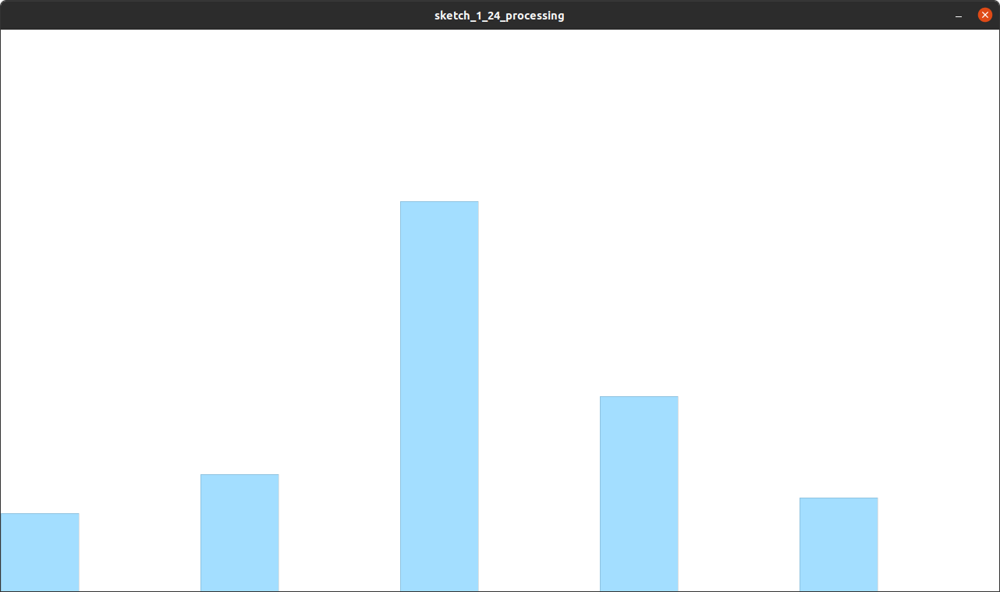

setup(), draw())
// Global constants, helper functions, etc. at the top
setup() {
// Runs ONCE when your sketch starts up
}
draw() {
// Runs EVERY FRAME
// This is the "main loop" of your graphics program
}
Drawing a rectangle like this:
void setup() {
// Set the canvas size
size(200, 100);
// Draw a 50 x 40 rectangle
rect(100, 30, 50, 40);
}
circle(), line(), and more - see Processing docs
void setup() {
// Set the canvas size
size(200, 100);
// Pick a color (reddish) - uses 0-255 integers
color red = color(244, 147, 147);
// Fill color
fill(red);
// Stroke (outline) color
stroke(red);
// Draw a 50 x 40 rectangle
rect(100, 30, 50, 40);
}
Let's make something like this, together:

rect(0, height, barWidth, -100);
rect(width * 0.2, height, barWidth, -150);
rect(width * 0.4, height, barWidth, -500);
rect(width * 0.6, height, barWidth, -250);
rect(width * 0.8, height, barWidth, 0);
Remapping: one data range to another
float remap(float value, float min1, float max1, float min2, float max2) {
return min2 + (value - min1) * (max2 - min2) / (max1 - min1);
}
Normalization: special case of remapping to 0-1
float[] values = {1.0, 1.5, 5.0, 2.5, 0.0};
for (int i = 0; i < values.length; i++) {
float normalized = remap(values[i], min(values), max(values), 0, 1);
}
Suggestion: work in "data space" until you need to draw to screen, then convert to pixels.